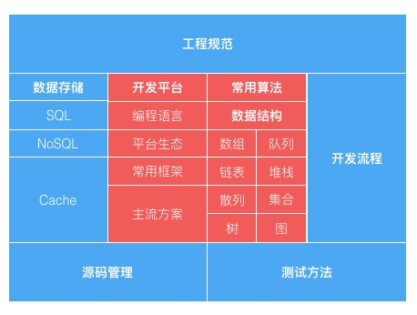

【实体书】
王垠《编程的智慧》，如何写好代码：
- 反复推敲代码
- 写优雅的代码
- 写模块化的代码
- 写可读的代码
- 写简单的代码
- 写直观的代码
- 写无懈可击的代码
- 正确处理错误
- 正确处理null指针
- 防止过度工程
【极客时间】
有一句投资箴言：“高风险未必带来高回报。”在选择职业方向的路上，你甚至没法像分散投资一样来控制风险，所以选择确定性的回报，要比抱着赌一把的心态更可取。看看当前的市场需求是什么，最需要什么，以及长期需要什么
关于技术，有一句流行的话：“技术总是短期被高估，但长期被低估”
算法，表达的是一个计算的动态过程，它引入了一个度量标准：时空复杂度
作为程序员，我们通常的需求就是最有效地用好各类数据存储，那么按了解的深度需要依次知道如下几点：
- 1）如何用？在什么场景下，用什么数据存储的什么特性？
- 2）它们是如何工作的？
- 3）如何优化你的使用方式？
- 4）它们的量化指标，并能够进行量化分析
程序员的基础技能图：

当你能够问出Google都不容易回答的问题时，这可能才是你真正走上职业程序员的开端
年薪与工作年限概念图：

架构是一种结构设计，但它同时可能存在于不同的维度和层次上：
- 高维度：指系统、子系统或服务之间的切分与交互结构
- 中维度：指系统、服务内部模块的切分与交互结构
- 低维度：指模块组成的代码结构、数据结构、库表结构等
在不同规模的团队中，存在不同维度的架构师，但不论工作在哪个维度的架构师，他们工作的共同点包括下面4个方面：
- 1）确定边界：划定问题域、系统域的边界
- 2）切分协作：切分系统和服务，目的是建立分工与协作，并行心获得效率
- 3）连接交互：在切分的各部分之间建立连接交互的原则和机制
- 4）组装整合：把切分的各部分按照预期定义的规则和方法组装整合为一体，完成系统目标
架构师的交付成果是一整套决策流，文档仅仅是交付载体，而且仅仅是过程交付产物，最终的技术决策流实际体现在线上系统的运行结构中
实现最终交付物的过程中一般会有下面6个方面的考虑：选型评估；程序设计；执行效率；稳定健壮；维护运维；集成部署

实现一个功能，确定了合适的选型之后，需要从逻辑、控制与数据三方面考虑程序设计：
- 1）逻辑，即功能的业务逻辑，反映了真实业务场景流程与分支，包含大量业务领域知识
- 2）控制，即考虑业务逻辑的执行策略，哪些可以并行执行，哪些可以异步执行，哪些地方又必须同步等待结果并串行执行？
- 3）数据，包括数据结构、数据状态变化和存取方式
软件系统或架构，不像建筑物会因为时间的流逝而自然损耗腐坏，它只会因为变化而腐坏。一开始清晰整洁的架构与实现随着需求的变化而不断变得浑浊、混乱。这也就意味着系统的“熵”在不断增高
架构与实现之间，存在一条鸿沟，这是它们之间的断裂带。断裂带出现在架构执行过程之中，落在文档上的架构决策实际上是静态的，但真正的架构执行过程却是动态的。架构师如何准确地传递架构决策？而开发实施的效果又如何能与架构决策保持一致？在这个过程中出现 实施与决策的冲突，就又需要重新协调沟通讨论以取得新的一致
让架构与实现分道扬镳的原因有：
- 1）沟通问题：如信息传递障碍
- 2）水平问题：如技术能力不足
- 3）态度问题：如偷懒走捷径
- 4）现实问题：如无法变更的截止日期（Deadline）
框架和模式的共同点在于，它们都提供了一种问题的重用解决方案。其中，框架是代码复用，模式是设计复用
框架采用了一种结构化的方式来对特定的编程领域进行了规范化，在框架中直接就会包含很多模式的应用、模式的设计概念、领域的优化实践等，都被固化在了框架之中。框架是程度代码，而模式是关于这些程度代码的知识
按代码的作用，可以分为如下三类：
- 1）功能代码，是实现需求的业务逻辑代码，反映真实业务场景，包含大量领域知识。因为业务逻辑的复杂度决定了功能性代码的复杂度，所以要把功能代码写好，最难的不是编码本身，而是搞清楚功能背后的需求并得到正确的理解。之后的编码活动，就仅是一个“翻译”工作了：把需求“翻译”为代码
- 2）控制代码，是控制业务功能逻辑代码执行的代码，即业务逻辑的执行策略。控制代码，都是与业务功能逻辑不直接相关的，但它们和程序运行的性能、稳定性、可用性直接相关
- 3）运维代码，就是方便程序检测、诊断和运行时处理的代码。它们的存在，才让系统具备了真正工业级的可运维性
用户经常会把他们的需要，表达成对你的行为的要求，也就是说不真正告诉你要什么，而是告诉你要做什么。所以你才需要对被要求开发的功能进行更深入的思考
功能、控制、运维，三类代码，在现实的开发场景中优先级是这样依次排序。有时你可能仅仅完成了第一类功能代码就迫于各种压力上线发布了，但你要在内心谨记，少了后两类代码，将来都会是负债，基于是灾难。而一个满足工业级强度的程序系统，这三类代码，一个也不能少
粗放式编程场景：需求到开发手上后，开始编码，编码完成，人肉测试，没问题后快速发布到线上，然后进入下一个迭代
《黑客与画家》书里说：“编程和画画近乎异曲同工。”所以，你看那些成名画家的作品，如果按时间顺序来排列展示，你会发现每幅画所用的技巧，都是建立在上一幅作品学到的东西之上；如果某幅作品特别出众，你往往也能在更早期的作品中找到类似的版本。而编程的精进过程也是类似的
编程，其实一开始哪有什么完美，只有不断变得更好。好不是完美，好是一个过程，一个不断精益化的过程。
编程的背后是交付程序系统，交付关心的是三点：功能多少、质量好坏、效率快慢。真实的编程环境下，你需要在三者间取得平衡，哪些部分可能是多而粗放的交付，哪些部分是好而专业的完成，同时还要考虑效率快慢（时间）的需求
好代码有一种品质，克制；坏代码的一种味道，炫技
除了增加不必要的复杂性外，炫技的代码，也可能更容易出现Bug
其实对于新技术，即使从我知道、我了解到我熟悉、我深谙，这时也还需要克制，要等待合适的时机
不克制的一种形态是容易做出臆想的、通用化的假设，而且我们还会给这种假设安一个非常正当的理由：扩展性。不可否认，扩展性很重要，但扩展性也应当来自真实的需求，而非假设将来的某天可能需要扩展，因为扩展性的反面就是带来设计抽象的复杂性以及代码量的增加
如果才是克制的编程方式？
- 1）克制的编码，每次写完代码，需要去反思和提炼它，代码应当是直观的，可读的，高效的
- 2）克制的代码，是即使站在远远的地方去看屏幕上的代码，甚至看不清代码的具体内容时，也能感受到它的结构是干净整齐的，而非“意大利面条”似的混乱无序
- 3）克制的重构，是每次看到“坏”代码不是立刻就动手去改，而是先标记圈定它，然后通读代码，掌握全局，重新设计，最后再等待一个合适的时机，来一气呵成地完成重构
程序员要深刻地理用户的原始需求。虽然需求很多时候来自于需求（产品）文档，但需求（产品）文档上写的并不一定真正体现了用户的原始需求
编程与翻译一样，追求“信、达、雅”
每个程序员都应该知道的延迟数字

一个程序员要想精确评估程序的运行效率和效果，就得自己动手做大量的基准测试：基准测试和测试人员做的性能测试不同。测试人员做的性能测试都是针对真实业务综合场景的模拟，测试的是整体系统的运行；而基准测试是开发人员自己做来帮助准确理解程序运行效率和效果的方式，当测试人员在性能测试发现了系统的性能问题时，开发人员才可能一步步拆解根据基准测试的标尺效果找到真正的瓶颈点，否则大部分的性能优化都是在靠猜测
技术性Bug可以从很多维度分类，从“时空”角度可划分为如下两类：
- 空间：环境过敏
- 时间：周期规律
环境，即程序运行时的空间与依赖。程序运行的依赖环境是很复杂的，而且一般没那么可靠，总是可能出现这样或那样的问题
实际在服务器上，出问题概率最高的可能就是机械硬盘
运行环境发生变化，程序就出现异常现象，就称为“程序过敏反应”：“程序将存在问题的环境当作正常处理，从而产生的异常。”潜在的环境问题通常就成了程序的过敏源。
“环境过敏”应对之道：
- 了解环境。至少必须关心与程序运行直接相关联的那一层环境
- 收集信息。不仅仅局限于相关直接依赖环境的配置和参数，也包括用户输入的一些数据。真实场景确实大量存在这样一种情况：同样的环境只针对个别用户发生异常过敏反应
针对“三高”（高可用、高性能、高扩展），服务端程序生产运行环境的可靠性并不如你想象的高，虽然平时的开发、调试中你可能很难遇到这些环境故障，但大规模的分布式程序系统，面向失败设计和编码（Design For Failure）则是服务端的“抗过敏代码”
周期性的Bug，虽然乍一看很难解决的样子，但它总会重复出现，就像可以重新倒带的“案发现场”，找到真凶也就简单的。
非规律性 BUG，最好的办法就是采用工具，直接引入代码Profiler等性能剖析工具，就可以准确地找到有性能问题的代码段，从而避免了看似有理却无效的猜测
能称得上神出鬼没的Bug只有一种：海森堡Bug（Heisenbug），出现的场景通常都是和分布式的并发编程有关
所有Bug的解决之道只有两类：事前和事后
事后，就是指Bug出现后容易捕捉现场并定位解决的，比如周期类的Bug
重蹈覆辙类的错误：
- 1）粗心大意：当我们验证自己的文章时，我们知道想表达的东西是什么。因为我们预期这些含义都存在，所以很容易忽略掉某些感官（视觉）表达上的缺失。我们眼睛看到的，在与我们脑子里的印象交战。这，便是我们对自己的错误视而不见的原因
- 2）认知偏差
- 3）熵增问题：程序规模变大，复杂度变高之后，再去修改程序或添加功能就更容易引发未知的Bug
吸取教训的方法：
- 1）优化方法：粗心大意，可以通过开发规范、代码风格、流程约束，代码评审和工具检查等工程手段来加以避免；认知偏差，一般没有太好的自我发现机制，但可以依赖团队和技术手段来纠偏；熵增问题，迭代更新；
- 2）塑造环境，建立和维护有利于程序员及时暴露并修正错误，挑战权威和主动改善系统的低权力距离文化氛围，这其实就是推崇扁平化管理和“工程师文化”的关键所在；规则、流程或评价体系的制定所造成的文化氛围，对于错误是否以及何时被暴露，如何被修正有着决定性的影响
我们常与错误相伴，查理·芒格说：
- 世界上不存在不犯错误的学习或行事方式，只是我们可以通过学习，比其他人少犯一些错误，也能够在犯了错误之后，更快地纠正错误。但既要过上富足的生活又不犯很多错误是不可能的。实际上，生活之所以如此，是为了让你们能够处理错误
著名生涯规划师古典《你的生命有什么可能？》对生涯提出了四个维度：
- 1）高度：背后的价值观是影响与权力。代表性关键词有：追逐竞争、改变世界
- 2）深度：背后的价值观是卓越与智慧。代表性关键词有：专业主义、工匠精神
- 3）宽度：背后的价值观是博爱与和谐。代表性关键词有：多种角色、丰富平衡
- 4）温度：背后的价值观是自由与快乐。代表性关键
“理想的自己”就是你想要成为什么人
“义务的自己”就是你应该干什么
放到马斯洛的需求金字塔中，“理想的自己”就是站在顶端“自我实现”位置的那个自己；而“义务的自己”正在金字塔下面四层，挣扎与现实的处境。如果你从来没有去向“理想的自己”望上一眼，走上一步，将来终究会后悔的。事实上，研究结论也证明了这点：70%以上的人都会后悔没有成为“理想的自己”
人生的征程中，先是恐惧驱动，地狱震颤了你，想要逃离黑暗深渊；后来才是愿望驱动，星空吸引了你，想要征服星辰大海
在设定目标这个领域，黑钻一位研究者马克·墨菲（Mark Murphy）曾提出过一种HARD方法：
- 1）Heartfelt衷心的，源自内心的
- 2）Animated活生生，有画面感的
- 3）Required必须的，需求明确的
- 4）Difficult困难的，有难度的
容易的选择，艰难的生活；艰难的选择，轻松的生活
做计划不能靠模糊的感觉，而是需要精确理性的计算
选择合适的事项，匹配正确的周期，建立合理的预期，得到不断进步的反馈
要坚持长期的刻意练习，唯一可靠的办法就是对其做出郑重的承诺。感兴趣和做承诺的差别在于，只是感兴趣的事，到了执行的时候，总可以给自己找出各种各样的原因、借口或外部因素的影响去延期执行；而承诺就是这件事是每天的最高优先级，除非不可抗力的因素，都应该优先执行
兴趣让计划更容易启动，而承诺让计划得以完成
计划即选择，而但凡选择就有成本。从经济学思维的角度，做计划就是做选择，选择了某些事情；而选择了这些事情，就意味着放弃了另外可能做的事情，这里面的成本就是机会成本
计划才能给你真正的自由，你对计划的控制力越强，离自由也就更近了
要获得好的结果，需要对自己有更高的期望，需要有自驱力
生活也许不会像计划那样发生，但对待生活的态度可以是：期待会大的事情发生，同时也要保持快乐和幸福，即使它没能发生
坚持，特别是长期的坚持，是需要动力的，而动力来自目标和意义。而获得目标与意义的最好方式是讲好一个故事
不要在挫败的情绪低谷期进行任何的选择与决策。可以暂时放下这件事，等待情绪回归到正常，再重新理性地评估计划还是否该坚持。每经历一次挫败后，你还选择坚持，那么就已经收获了成长
每个人都会有自己不同的节奏，这需要自己去摸索、练习，并慢慢提升。如果开始的节奏太快，可能很快就会疲惫、倦怠，很容易放弃；但如果一直节奏都很慢，则会达不到练习与提升的效果，变成了浪费时间
把自己的时间安排成一段一段的，高度集中和高度分心交叉分布
面对大量的信息和知识，我们应该如何应对？
- 1）信息和知识本身的价值：主观为主，客观因子是准入门槛，如果大家都能接触到，那么价值就不大
- 2）心智模型：解释个体对现实世界中某事动作的内在认知历程，它在有限的领域知识和有限的信息处理能力上，产生合理的解释。“心”是你对需要的选择，从心出发；“智”是对价值的判断，智力的匹配
注意力是一种有限的资源，你要是不擅长不集中注意力，你就不擅长集中注意力
你得挑选那些真正值得做和学的东西去让大脑满负荷运转，但凡投稿决心去做的事情，就需要百分百投入。这就是专注于少而精的东西，深入了解这些东西，进入到更深层次上。深可以无止境，那到底多深才合适？让你的内心对取得的效果感受到满意的深度层次上。它的反而是：但凡心存疑虑，不是那么确定要全力投入的事情，干脆就不要做了
工作分层图

在领域知识体系中，“点”是利器，“线”是路径，“面”是地图；而就我们个体而言，“点”是孤立知识点的学习掌握，而“线”是对这些点的连接，“面”则构成了完整的知识体系网
我们从学会一个知识，到能够熟练应用其去输出能力，大概会经过：

团队“机器”体系的三个核心点：
- 1）流程规则
- 2）工具系统
- 3）规范共识
要想产生更大的成果，取得更大的成功，我们需要找到放大个体或团队能力的杠杆支点
Facebook标语：比完美更重要的是先完成
技术学习资料的层次结构图

Tutorial（指南）和API Reference（应用编程接口参考）层次的信息资料能帮助你快速上手开发，而Spec（技术规范）和Code（源代码）会帮助你深刻地理解这门技术。而其他相关的技术书籍和文章，其实是作为一种补充阅读，好的技术书籍和文章应该有官方资料中未涵盖的特定经验或实践才算值得一读
每当我们接触一项新技术的时候，都要把手头的资料按照类似这样一个金字塔结构进行分类。如果我们阅读了一些技术博客和技术书籍，那么也要清楚地知道它们涉及到的是金字塔中的哪些部分
拉姆·查兰《领导梯队》人才潜能：
- 1）熟练潜能：关注当前专业领域且十分熟练，但没有显示出在开发新能力上的努力，竭力维持现有技能
- 2）成长潜能：按需开发新能力，显示出高于当前层级要求的其他技能，如：专业、管理、领导
- 3）转型潜能：持续有规律地开发新能力，追求跨层级的挑战和机会，展现雄心壮志
有共性的回忆趋向粘合在一起，标志性的回忆倾向于鹤立鸡群。心理学家认为：我们对时间的感知同时和我们的经历有关。如果一件事对于我们来说是“激动人心”的，这样的记忆在我们脑海中感觉到的时间会更长
在精确地感知与测量之后，你们才可能更准确地“预知”未来
转换一下你看待时间的方式，有人把它看做流水，任其从指间溜走，你却可以把它看作石头，用它去塑造什么
任何行动的发生，都需要两种努力才有可能：第一种，是行动本身固有需要的努力，如跑步，跑一公里和十公里固有需要的努力是不等量的；第二种，指决策是否执行这种行动的努力，决定跑一公里还是十公里的决策意志力消耗，我想也不会一样。构建习惯的目的，以及它们能起作用的原因在于：它能消除行动中第二种努力的决策消耗
如果你只做能力范围内的事，就不会成长
习惯，它的表象和形式给人的感觉是在重复一件事，但它的内在与核心其实是不断产生交付，持续的交付
如果你要构建一个习惯，就要运用好基因中已存在的关于“采集和狩猎”的本能：高度专注，跨出边界，持续交付
试一试，需要有更清晰的终点。关于终点，可以从以下几方面来考虑：
- 1）验证猜想
- 2）收获结果：定义清楚你尝试的这件事，到底能收获怎样具体的结果
- 3）体验过程：有时候结果并不确定
- 4）理解现实：完善你的知识与认知体系，然后再去理解现实为什么是这样的
提问原则：
- 1）提供足够的信息，让人能够回答：一般都是解答题形式，表达清楚你的解答目的
- 2）提供更多的选项，让人方便回答：草率的问题是懒惰的问题，更有意义的问题是把解答题变成选择题，提供你的选项，展现你探索了哪些路径
- 3）提供交换价值，建立讨论基础，表达感谢态度，让人乐于回答
当遇到暂时没有答案的问题时，先记录下来：
- 问题的上、下文
- 问题的具体描述
- 问题的解决思考和思路
- 问题的解决方案和具体技术或办法
- 问题解决后留下的思考或其他延伸的疑问
为何而问？获得答案，认清自我，选择自己的价值之道
代码规范建议：
- 1）设计模式：遵守设计模式能让你少踩坑，但如何灵活地采用合适的模式又是另外一种智慧了
- 2）术语约定：减少沟通歧义
- 3）单元测试
- 4）随时重构：解决技术债务
随手记录的主题可能很多，但真正能写的时间和精力却有限，因此你得挑选值得写的主题。如果把每一篇文字想象成一件产品，那么定义写作的主题，就像定义产品的灵魂，你得确定一个产品的目标、定位、以及面向的读者人群
美国作家库尔特·冯：想一个你关心，其他人也会关心的话题来写。要记住，不论你用多么发自肺腑的情感表达 ，对于读者来说，除非是他们真正关心的主题，不然怎么都不会太关心，而只有主题才是读者最真切的关注点。所以，关注你的主题，而不是想办法去显摆自己的文字
写作真正的压力来自于完成一件事情的压力，你要么一开始连个标题都想不出来，要么写两段之后就不知道如何继续下去。写第一篇文章会是一次漫长而痛苦的自我挣扎，你大概有30%的精力花在构思内容上，剩下70%的精力花在自我怀疑和自我否定上
写作与文字的价值实现分两部分，写完后就完成了对自我的价值实现，而交付后才算完成了对他人的价值实现
架构师能力模型图：

《认知与设计》色彩使用准则：
- 1）使用饱和度、亮度以及色相区分颜色，确保颜色的高反差，因为人的视觉是为边缘反差而优化的
- 2）使用独特的颜色，因为人最容易区分的颜色包括：红、绿、黄、蓝、白和黑
- 3）避免使用色盲无法区分的颜色对，比如：深红-黑、深红-深绿、蓝色-紫色、浅绿-白色
- 4）使用颜色之外的其他提示，对有颜色视觉障碍的人友好，而且也增强了可理解性
- 5）避免强烈的对抗色，比如：红黑、黄黑
代码也是写给人看的。程序员不会认为一份机器能运行而人很难看懂和代码是好代码，而画好图就能更好地帮助你去思考代码的组织和呈现方式
写作的展现，是一种广度路线，产生间接、长尾效应；演讲的展现，是一种深度路线，产生直接、深度连接
演讲的前期准备：
- 1）框架：引出主题、自我介绍、重点结构（问题、历史、方法、原因）、细节深入、总结回顾
- 目标
- 听众
- 重点
- 2）材料
- 幻灯片
- 演讲稿
- 小故事
- 3）节奏
- 开场
- 峰终：峰终定律，在“峰”和“终”的体验，主宰了对一段体验好或者不好的感受，而在过程中好或不好体验的比重、时间长短，对记忆的感觉差不多没有影响
- 4）表演
- 演，即表演和发挥，包括即兴发挥、框架内发挥和严格遵从剧本
一直花时间求学，也许是为了拖延人生做决定的时间
在偏基础研发、算法和特定技术复杂领域，会向“资深工程师”发展，属于深度优先。而在面向业务开发的领域，业务复杂度高于技术复杂度，则会向“架构师”方向发展，属于广度优先
劳伦斯·彼得：在一个等级制度中，每个员工趋向于上升到最终他所不能胜任的职位
晋升的本质是承担更大的责任，而责任和能力是需要匹配的，晋升就是完成这样一种匹配关系的过程。一个公司中的责任域是有限的、发展的、变化的，那你当下具备的能力是否匹配相应的责任域？你正在学习和开发的新能力域，是否能在组织中匹配上合适的责任域？这才是看待职场阶梯与晋升的正确方式
取得领先的方法，就是提携你身边的人。你对待别人的态度始终会伴随你，人们会忘记你所说和所做的一切，但永远不会忘记他们对你的感觉。帮助别人就是影响别人，如果你能帮很多人，你本身就是高手，你的影响力就很大，你就能做更大的事
给人当学徒，就给你提供了这个机会。你现在把自己和一个高手连接在了一起，你可以从内部了解第一手的经验。这就是学徒工作的协议：用礼敬和服务，换取机会——而这个机会还不是立功露脸的机会，而是学习实践的机会
带好了徒弟，接手并取代了你当前正在做的事情，你才有可能解放出来去做更高层次和更大维度的事情
学习和成长是自己的事，严肃待之，行动起来，自助者，人亦助之
安全与效率的平衡，是所有工程技术的核心
安全范畴：

效率范畴：

规模化的设计思路，一方向是自顶向下去完成顶层设计：
- 1）去建立系统的边界。系统提供什么？不提供什么？以怎样的形式提供？
- 2）去划定系统的区域。也就是系统的层次与划分，以及它们之间的通信路径
规模化的设计思路别一方面，就是要让系统具备自底向上的演化机能。因为，自顶向下的设计是前瞻性的设计，但没有人能做到完美的前瞻性设计；而自底向上的演化机能，是后验性的反应，它能调整修复前瞻性设计中可能的盲点缺陷
工程思维：一种具备科学理论支撑，并成体系的系统化思维
- 1）可以简单归因的问题：属于直接简单的因果关系
- 2）难以简单归因的问题：属于间接复杂的因果关系
一个系统中可以有若干个正反馈和若干个负反馈回路，正反馈回路让系统或者增长、或者崩溃，是要偏离平衡，负反馈回路则尽力保持系统的平衡。对于你想要解决的问题，可能就有一个回路，正在起主导作用！如果你能发现在系统里起主导作用的回路是什么，你就抓住了系统的主要矛盾，你就找到了问题的关键所在
系统思维洞察问题本质，科学思维发现最优解法
倦怠，意味着你在这一关打到头了，而新的一关的钥匙，就在你手上
工作区：

做自己所爱，是对的；爱上自己所做，也是对的，关键就是要找到什么在真正驱动你前进
在求解最优参数的算法中，很多都有一个缺陷，就是容易达到一种局部最优点，即：参数的选择尝试收敛到了一小块范围内，无论再怎么尝试变化都没法取得更优的结果
需求没沟通清楚，写出来的代码，即使没有 BUG 将来也可能是负债。因为基于沟通不充分的需求写出来的代码，大部分都是负债大于资产属性的，这最后造成的后果往往是：出来混都是要还的，不是自己还是就是别人来还
沟通拆解：
- 1）内容：针对不同的人，需要准备不同的内容
- 2）形式：沟通不局限于面对面的谈话
- 3）风格：不同方式和场景的沟通可以有不同的风格
《黑客与画家》：判断一个程序员是否具备“换位思考”的能力有一个好方法，那就是看他怎样向没有技术背景的人解释技术问题
刻意练习：
- 1）只在“学习区”练习，练习时注意力必须高度集中
- 2）把训练的内容分成有针对性的小块，对每一个小块进行重复练习
- 3）在整个练习过程中，随时能获得有效的反馈
技术书籍更适合于在你解决问题的过程中用来参考。完事地读技术书籍能增长你的知识，但却无法快速习得技能，并解决你的问题
《软技能》，如何开发一门新技能：
- 1）了解全局
- 2）确定范围
- 3）定义目标
- 4）寻找资源
- 5）学习计划
- 6）筛选资源
- 7）开始学习，浅尝辄止
- 8）动手操作，边玩边学
- 9）全面掌握，学以致用
- 10）乐为人师，融汇贯通
技能是你习得的一种工具，那么能力就是你运用工具的思考和行为方式，它是你做成一件事并取得成果的品质
持续保养主要的我现在技能，合理开发辅助技能，形成自己独有的技能组合，沉淀能力模型，发展能力矩阵
事实上，大部分的用户需求，技术上总是可以实现的。这些需求的真正限制，要么是时间，要么是资源
应对你认为的“技术上无法实现”的需求：
- 1）全局背景：了解全局，对每类问题的方案有个大概了解
- 2）聚集范围：集中一个方向深入评估
- 3）定义标准：定义问题解决的成功标准
- 4）深度评估：可以保守些
代码作品，可以小到一段函数、一个类，大到一个库或框架、一个服务，甚至一个系统。但打磨代码作品的方式，应该是定期对自己写完的代码进行沉淀、梳理和规整，提取可复用的功能，同样的功能只写一次，形成自己专属的编码脚手架和代码库。在以后的学习实践中定期反思，不断优化其效率和品质
《黑客与画家》作秀作品的秘诀就是：非常严格的品味，再加上实现这种品味的能力；大多数做出优美成果的人好像只是为了修正他们眼中丑陋的东西
当你给别人介绍自己时，只需要介绍自己的作品，而不再需要介绍自己的技能
技术需要懂的是产品提供的核心服务和流程，并清晰地将其映射到技术的支持能力与成本上
显性的错误会有测试、产品甚至最终用户来帮你纠正，但隐性的错误却很难有人能及时帮你发现并纠正
代码评审的初衷是提高代码质量，在代码进入生产环境前经过同行评审来发现缺陷，降低损失概率
一般的代码审查速度约是一个小时150行，对于一些关键软件，一小时数百行代码的审查速度太快，可能无法找到程序中的问题。对于产品生命周期很长的软件公司而言，代码审查是很有效的工具
给自己Review是一种自省，自我的成长总是从自省开始的
代码评审，能提升质量，降低缺陷；代码评审，也能传播知识，促进沟通；代码评审，甚至还能影响心理，端正姿势
最可怕的失业来自变革引发的技能性淘汰（如：国企下岗），其次是环境引发的萧条（如：金融危机），再次是技能虽然还有普世价值，但自身却适应不了环境变化 带来的改变与调整
跟年轻的大脑相比，中年大脑在两个方面的性能是下降的：计算速度和注意力。其他方面，比如模式识别、空间想象能力、逻辑推理能力等等，性能不但没有下降，而且还提高了
《三十分钟看清经济机器如何运转》：
- 1）不要让债务的增长速度超过收入
- 2）不要让收入的增长速度超过生产率
- 3）尽一切努力提高生产率
梁宁《赚钱的事和值钱的事》：
- 1）赚钱的事，核心是当下的利差，现金现货，将本求利
- 2）值钱的事，核心是结构性价值，兑现时间，在某个未来
去做值钱的事，打造值钱的结构，从知识结构、技能结构到作品结构与产品结构，然后等待某个未来的兑现时间
循证的方式就是：即使你看到了一个更好的技术架构方式，但也要结合自身的实际情况去思考实践的路径
你不能看见别人的功夫套路好，破解难题手到擒来，就轻易决定改练别人的功夫
面对众多的技术干货，从循证出发，找到参考，做出技术决策，决定后续演进路线；在演进路上，不断切磋，升级思考方式，调整路径，走出合适的道路；在路上，把遇到的独立的知识点，不断吸收连结进行自己的技术知识体系网
“康威定律”：任何组织在设计一套系统时，所交付的设计方案在结构上都与该组织的沟通结构保持一致
康威定律，是和组织的团队、分工、能力与定位有关的，其本质是最大化团队的核心能力，最小化沟通成本
技术方案决策的核心，围绕的正是关于方案的实施成本与效率
成本与效率背后的考量因素：
- 1）团队：人的因素，关于团队的水平，掌握的技术能力和积累的经验
- 2）环境：能利用的环境支持，公司内部的平台服务或外部的开源软件与社区
- 3）技术：技术因素，该项技术当前的成熟度，潜在的发展趋势
- 4）约束：其他非技术约束，比如管理权限的干涉、限定死的产品发布日期等
技术没有绝对的标准，适合的技术决策，总是在受限的约束条件下，围绕成本与效率做出的选择权衡。对于一些纯粹的技术理想主义者，追求技术的完美与合理性，初心本不错，但也许现实需要更多的行动柔性
技术债务：在程序设计与开发过程中，有意无意做出的错误或不理想的技术决策，由此带来的后果 ，逐步积累，就像债务一样
《老码农看到的技术债务》：
- 1）战略债务，是为了战略利益故意为之，并长期存在。在公司或业务高速发展期，主动放弃了一些技术上的完备与完美性，而保持快速的迭代与试错性
- 2）战术债务，一般是为了应对短期紧急情况采取的折衷办法。这种债务的特点就是高息
- 3）疏忽债务，一般是无意识 的。从某种意义上来说，是程序员的成长债务，随着知识、技能与经验的积累，这类债务会逐步减少。另一方面，如果我们主动创造一个关注技术债务的环境，这类债务就会被有意识地还掉
管理债务的目标就是识别出债务，并明了不同类型的债务应该在何时归还，不要让债务持续累积并导致技术破产。一般来说，只要感觉到团队生产力下降，很可能就是因为有技术债的影响。这时，我们就需要识别出隐藏的债务，评估其“利率”并判断是否需要还上这笔债，以及何时还
创业公司从小到大的发展过程中，业务在高速增长，系统服务的实现即使没那么优化，但只要能通过加机器扩展，就暂时没必要去归还实现层面的负债。无非是早期多浪费点机器资源，等业务到了一定规模、进入平稳期后，再一次性清偿掉这笔实现负债，降低运营成本
大债务的归还，如构架升级，就需要仔细地考虑和分析机会成本与潜在收益：
- 1）规划：代表愿景，分析哪些债务需要在什么时间还，机会成本的损失与预期收益是多少
- 2）计划：代表路径，细致的债务分期偿还代计划
- 3）跟踪：代表过程，真正上路了，确认债务的偿还质量与到位情况
程序员的信用，更多体现在面对技术债务的态度和能力——有意识地引入债务，并有计划地归还债务；无意识地引入债务，发现之后，有意识地归还
本杰明·富兰克林：要么写点值得读的东西，要么做点值得写的事情
当一件事情来到你面前，决定是否需要去做时，如果你觉得不能让你产生“哇~噢~”的感觉，那么就可以坚决地说“不”
走众争之路，拼的是努力，只能成为平均的普通人；
走少有人走的路，拼的是选择、勇气和毅力，可以让你遇见独特的风景，为稀缺的机会创造可能性
走独一无二的路，真的是要拼天赋了
通过短期的逃避带来的平衡，只会让你在更长期的范围内失衡
长期的视角决定了，无论工作还是生活追求的都不应该是最后的目标或目的——一种终点状态。你必须得关注过程，这个过程才是你的生活
人生，就是在风险中沉浮，平衡的交易重力就是用来应对风险与波动的
不是通过努力工作来过上想要的生活，而是先设定了想要的生活，自然而然工作就会成为生活中合适的一部分
技能模型才是区分不同专业人才特点和价值的核心关键点
程序员作为工程师的一种，必须得有一项核心硬技能，这是需要长时间积累和磨练的技能，要花大力气的，而这个大力气和长时间，也正是这门技能的门槛。关于技能的习得有一个流行的看法是：花20%的时间快速获得某个领域80%的知识和技能。这看起来像一种学习捷径，但一个硬技能领域最核心的竞争力往往是最后那20%——也就是你用那80%的功夫反复磨练出来最后20%的技艺
我们大部分普通人，拥有的是有限的时间与才华，面对的是无限的兴趣和技能，同时修炼多个核心硬技能是不明智，甚至是不可行的
《达芬奇诅咒》就选择技能领域推荐三个标准：
- 1）你确实喜欢
- 2）你在这个领域有天赋
- 3）这个领域能挣到钱
从刀剑相接到战场升级的升维路：
- 1）刀剑相接的战场，我们靠“杀人术”也即硬技能求生存，但时间久了就会有瓶颈
- 2）技能升维，需要认知结构先升维，“我们不能用制造问题时同一水平的思维来解决问题”
- 3）升维后的技能，也需要一个升级后的新战场，走上理论结合实践的“谋战”之路
理解、掌握并应用好一种知识和技巧是你的“拔刀术”，但分享传递并教授指导这种知识和技巧才是“御剑术”
高杠杆率的活动包括：
- 1）一个人可以同时影响很多人
- 2）一个人可以对别人产生长远的影响
- 3）一个人所提供的知识和技能，会对一群人的工作造成影响
PPC理论个人发展的方向：
- 1）专业
- 2）展现
- 3）连接
专业包括：
- 1）专业能力，包含了知识和技能
- 2）专业行为，包括规范化的工作流程和作风，严格的职业纪律与操守
- 3）专业产出，指最终产出的结果是稳定的，可预测的，处在一定品质标准差范围内
展现，建立于专业的基础上：
- 1）展现专业能力：包括代码、架构、认知、决策
- 2）展现专业行为：包括沟通、交流、表达、协作
- 3）展现专业产出：包括作品、方案、洞察、演示
任何从事创作或艺术工作的人，例如：艺术家、音乐家、摄影师、工匠、演员、动画师、设计师或作者等，只要能获得一千位忠实粉丝，就能维持生活
领域，是一个你自己的世界，在这个世界中，你不断地提出问题并找到有趣或有效的解决方案
人，似乎不犯一些错，就成长不了，也许这就是成长的成本
技术主管即使拥有比团队里所有其他程序员更高超的开发实现技能，对所有开发任务拥有最强大的实现自信，也需要转变为另一种“借助他人使之实现”的能力和自信，因为技术主管是一个承担更广泛责任的角色
最适合技术主管角色的人，不一定是团队中编程能力最好的人，但必然是团队中编程、沟通和协作能力最综合平衡的人。而技术主管之所以是一个过渡，就在于继续往前走，如果偏向“主管”就会成为真正的管理者（经理），如果偏向“技术”就会走向架构师
程序员、技术主管和架构师的职责表

自己才是职业生涯的管理者，要想清楚自己的发展路径：无期的理想是什么？近期的规划是什么？而今日的任务和功课又是什么？今日之任务或功课哪些有助于近期之规划的实现，而近期之规划是否有利于无期之理想？
“海尔迈耶系列问题”：
- 1）你要做什么？不要用术语，清晰地表达你的目标
- 2）这件事现在是怎么做的？现在的做法有什么局限？
- 3）谁在关心？你的方法有哪些创新？你为什么觉得你的方法能够成功？
- 4）如果你的方法能够成功，它能带来怎样的变化？
- 5）你的方法需要花多少钱？需要花费多少资源？要怎样在过程中和结束时进行评估？
“不要成为做快餐的'厨师’”——尼古拉斯·泽卡斯《JavaScript高级程序设计》
即使是一个坏的决策也比始终不做决策要好，因为在行动的过程中比“陷”在原地有可能产生好的改变
成长路线“高”和“精”：
- 1）高的路线，需要借助技术的杠杆，认清所处的价值网络，找到合适的价值点，撬动更大的价值
- 2）精的路线，在做事情的成功率和速度接近自己的极限后，只能去提升事情 的量级，才能发挥出专家的价值